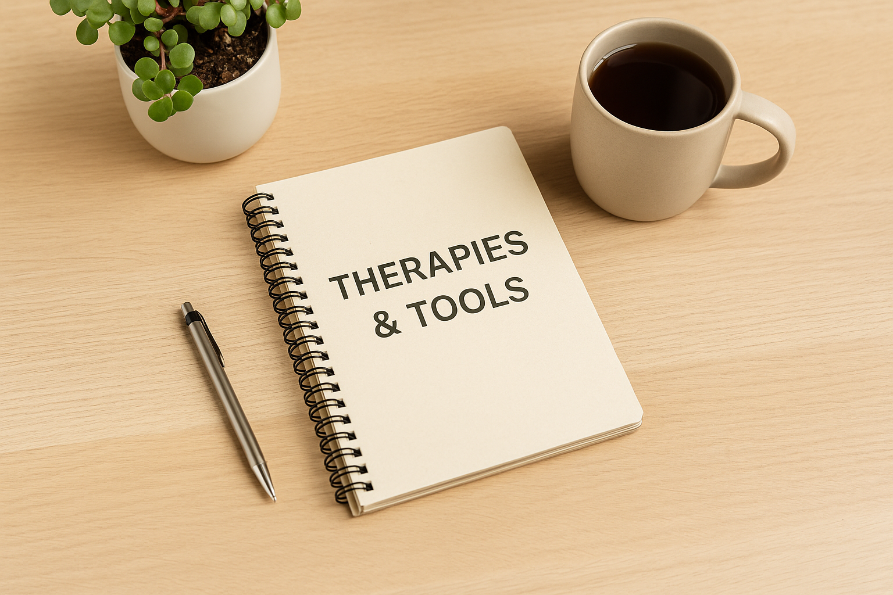
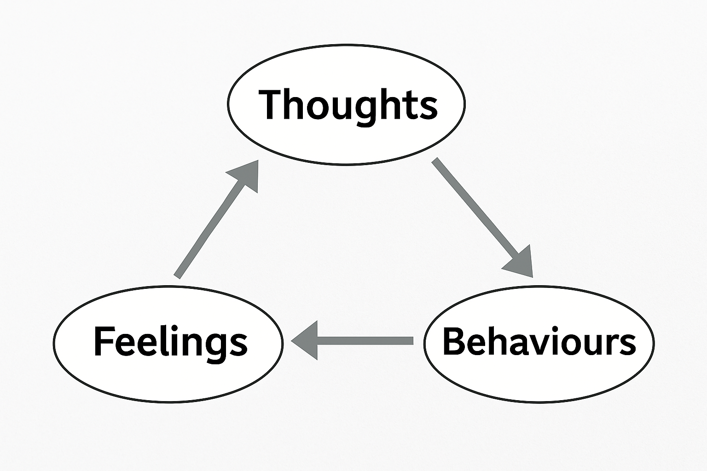

Practical, evidence-informed tools you can use at home — simple steps, steady progress.
Therapies & Tools
This page gathers the approaches we reference across Wellbeing: what they are, why they help, and how to try them safely.
Everything is written to be practical and kind, with links to printables and short videos.
1) CBT (Cognitive Behavioural Therapy)

CBT looks at the loop between thoughts, feelings, body sensations, and actions.
What it is
Structured skills to spot unhelpful thought patterns, experiment with new behaviours, and reduce symptoms over time.
Try this
Keep a brief thought–feeling–action note once a day.
Pick one tiny behaviour change and test it this week.
We’re working toward optional BSL and other sign language overlays, plus audio description across pages.
If you spot an access issue, please let us know via Contact.
10) Regional links (UK/Scotland)
NHS Inform Scotland mental health self-help
Breathing Space (Scotland)
SAMH – resources and support
We’ll keep adding local supports and helplines over time.
Important Note
The information on this page is for general understanding and support. It is not a substitute for professional medical, psychological, or legal advice.
If you feel unable to keep yourself safe or someone else is at risk, call 999 (UK) immediately. If you’re outside the UK, contact your local emergency number.
For non-emergency concerns, consider speaking with a qualified health professional or one of the support services listed on our Wellbeing pages.